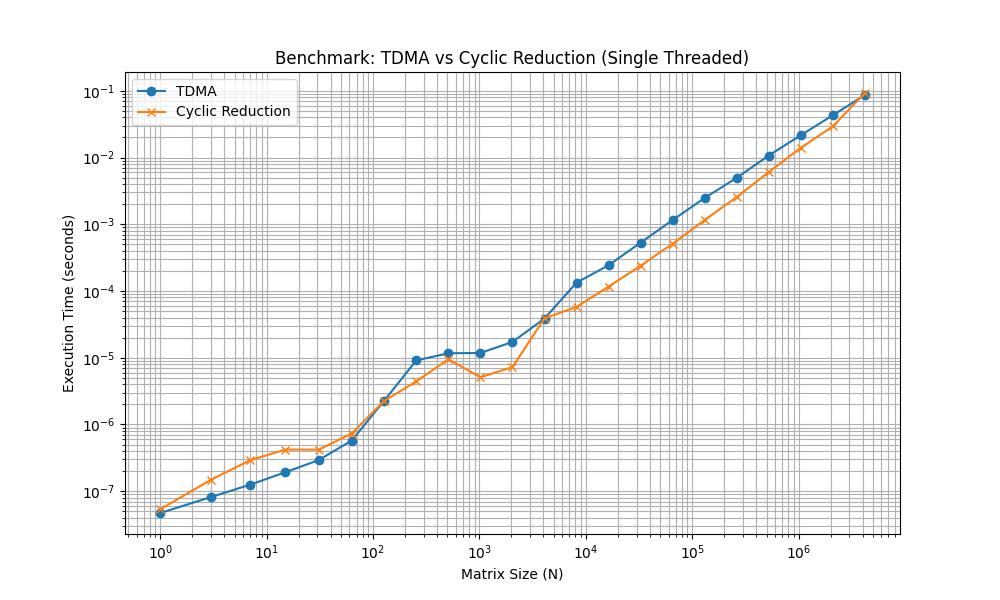
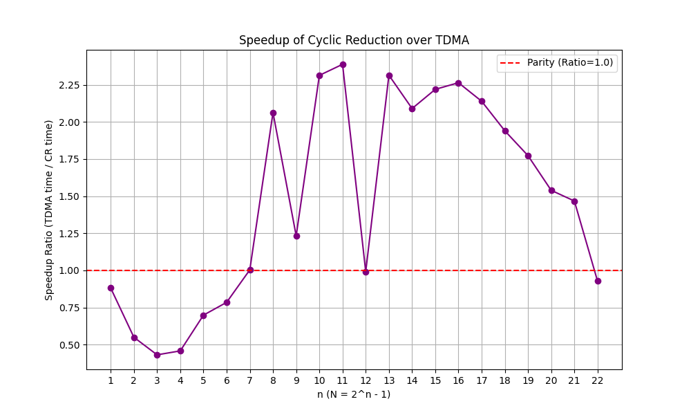

高速なToeplitz 3重対角行列ソルバー: TDMA vs Cyclic Reduction
数値計算の分野では、特定の構造を持つ行列方程式 \(Ax=b\) をいかに高速に解くかが常に重要なトピックです。 今回は、\(N = 2^n - 1\) のサイズを持つ Toeplitz 3重対角行列（対角成分が一定の行列）を対象に、定番の TDMA (Thomas Algorithm) アルゴリズムと、並列化に適した Cyclic Reduction (CR) アルゴリズムの性能を比較します。
驚くべきことに、並列化を行わないシングルスレッド環境においても、特定条件下では CR 法が TDMA よりも高速であるという結果が得られました。本記事ではそのアルゴリズムの詳細な仕組みとベンチマーク結果を紹介します。
Warning
この記事は Google Antigravity を使用して作成されました。 あくまで私自身の勉強した結果の備忘録としてのメモと思っていただければと思います。 （正確性はかならずしも担保されません。） 作成過程で知らないことが多くあり、非常に勉強になりました。
1. 問題設定¶
解きたい方程式は以下の形式です。 $$ A x = d $$ ここで、\(A\) は以下のような Toeplitz 3重対角行列です。
各行の方程式は \(a x_{i-1} + b x_i + c x_{i+1} = d_i\) (\(i = 1, \dots, N\)) です（境界条件 \(x_0 = x_{N+1} = 0\)）。
2. アルゴリズム詳細¶
TDMA (Thomas Algorithm)¶
TDMA はガウスの消去法を3重対角行列に特化させたアルゴリズムです。 前進消去と後退代入の2ステップで解を求めます。
-
前進消去 (Forward Elimination): 対角成分より下の要素 \(a\) を消去し、上三角行列に変形します。Toeplitz 行列の場合でも係数がステップごとに変化するため、配列 \(c', d'\) を更新していきます。
\[ c'_1 = \frac{c}{b}, \quad d'_1 = \frac{d_1}{b} \]\[ c'_i = \frac{c}{b - a c'_{i-1}}, \quad d'_i = \frac{d_i - a d'_{i-1}}{b - a c'_{i-1}} \quad (i = 2, \dots, N) \] -
後退代入 (Back Substitution): 変形された上三角行列を後ろから解きます。
\[ x_N = d'_N \]\[ x_i = d'_i - c'_i x_{i+1} \quad (i = N-1, \dots, 1) \]
計算量は \(O(N)\) ですが、各ステップ \(i\) が \(i-1\) の結果に強く依存するため、並列化が困難です。
Cyclic Reduction (CR)¶
CR法は、奇数番目の変数を消去し、偶数番目の変数だけの方程式系（サイズが約半分）を再帰的に作る分割統治法的なアプローチです。Toeplitz 行列の場合、係数の更新が一様な漸化式で記述できます。
-
Forward Reduction: ステップ \(k\) において、隣接する式 (\(i \pm 2^k\)) を用いて中央の式 (\(i\)) から \(x_{i \pm 2^k}\) を消去します。 更新式は以下の通りです： $$ \alpha_k = -a_k / b_k, \quad \gamma_k = -c_k / b_k $$ $$ a_{k+1} = \alpha_k a_k = -\frac{a_k^2}{b_k} $$ $$ b_{k+1} = b_k + \alpha_k c_k + \gamma_k a_k = b_k - \frac{2 a_k c_k}{b_k} $$ $$ c_{k+1} = \gamma_k c_k = -\frac{c_k^2}{b_k} $$ $$ d_i^{(k+1)} = d_i^{(k)} + \alpha_k d_{i-2^k}^{(k)} + \gamma_k d_{i+2^k}^{(k)} $$ これを \(N=1\) になるまで繰り返します。
-
Backward Substitution: 再帰的に解を求めます。各レベルで消去された変数（奇数番目）は、既に計算された両隣の変数（偶数番目）を用いて求められます。 $$ x_i = \frac{d_i^{(k)} - a_k x_{i-2^k} - c_k x_{i+2^k}}{b_k} $$
計算量は \(O(N)\) ですが、各ステップ内での計算は独立しており並列化が可能です。
具体的な展開例¶
ケース $N=3$ ($n=2$) の展開を見る
変数: $x_1, x_2, x_3$. 境界: $x_0=0, x_4=0$. 1. **Forward Phase ($k=0$):** * 残すインデックス: $2^1$ の倍数 $\rightarrow \{2\}$ * 更新式: $$ d_2^{(1)} = d_2^{(0)} + \alpha_0 d_1^{(0)} + \gamma_0 d_3^{(0)} $$ * これで $x_2$ に関する独立した方程式 $b_1 x_2 = d_2^{(1)}$ が得られます。 2. **Top Solve:** * $x_2 = d_2^{(1)} / b_1$ 3. **Backward Phase ($k=0$):** * 求めるインデックス: $\{1, 3\}$ * 式: $$ x_1 = (d_1^{(0)} - c_0 x_2) / b_0 $$ $$ x_3 = (d_3^{(0)} - a_0 x_2) / b_0 $$ケース $N=7$ ($n=3$) の展開を見る
変数: $1, \dots, 7$. 1. **Forward Phase ($k=0$):** * 残すインデックス: $\{2, 4, 6\}$ * 連立方程式のサイズが 7 から 3 に縮小されます。係数は $a_1, b_1, c_1$ に更新されます。 2. **Forward Phase ($k=1$):** * 残すインデックス: $\{4\}$ * 対象 $4$ の隣は $4-2^1=2$ と $4+2^1=6$. * $x_4$ に関する独立した方程式 $b_2 x_4 = d_4^{(2)}$ が得られます。 3. **Top Solve:** * $x_4 = d_4^{(2)} / b_2$ 4. **Backward Phase ($k=1$):** * 求めるインデックス: $\{2, 6\}$ * 式: $$ x_2 = (d_2^{(1)} - c_1 x_4) / b_1 $$ $$ x_6 = (d_6^{(1)} - a_1 x_4) / b_1 $$ 5. **Backward Phase ($k=0$):** * 求めるインデックス: $\{1, 3, 5, 7\}$ * 既に求まっている $x_2, x_4, x_6$ を用いて計算します。3. ベンチマーク結果¶
実行環境: Linux, Single-threaded
設定:
- \(d\) は毎回ランダムに生成 (-10.0 ~ 10.0)
- 各サイズについて 100 回試行の平均と標準偏差を計測
- 計算結果について TDMA と CR の一致を確認済み
実行時間 (\(N\) vs Time): 
速度比 (\(N\) vs Ratio): 
ベンチマークコード (C++)¶
以下のコードは g++ などの C++ コンパイラでコンパイルして実行可能です。
最適化オプション (-O3) とアーキテクチャ最適化 (-march=native) を有効にすることを推奨します。
コンパイルと実行:
ベンチマークで使用したC++コードを確認する
#include <iostream>
#include <vector>
#include <chrono>
#include <cmath>
#include <iomanip>
#include <stdexcept>
#include <numeric>
#include <random>
#include <cassert>
#include <fstream>
// Structure for coefficients
struct Coefficients {
double a, b, c;
};
// Cyclic Reduction Solver (borrowed from src/solver.cpp, OpenMP removed)
std::vector<double> solve_toeplitz(double a, double b, double c, const std::vector<double>& d) {
size_t N = d.size();
if (N == 0) return {};
// Check if N = 2^n - 1
size_t N_plus_1 = N + 1;
if ((N_plus_1 & (N_plus_1 - 1)) != 0) {
throw std::invalid_argument("Size of input vector must be 2^n - 1");
}
// Working vector, initially copy of d
std::vector<double> x = d;
// History to store coefficients and eliminated even rows
std::vector<Coefficients> history_coeffs;
std::vector<std::vector<double>> history_d;
double ak = a;
double bk = b;
double ck = c;
// Forward Reduction
while (x.size() > 1) {
size_t M = x.size();
size_t next_M = (M - 1) / 2;
history_coeffs.push_back({ak, bk, ck});
// Save eliminated values (even indices: 0, 2...)
size_t even_count = next_M + 1;
std::vector<double> saved_d(even_count);
for (size_t i = 0; i < even_count; ++i) {
saved_d[i] = x[2 * i];
}
history_d.push_back(std::move(saved_d));
std::vector<double> next_x(next_M);
double alpha = -ak / bk;
double gamma = -ck / bk;
double next_ak = alpha * ak;
double next_ck = gamma * ck;
double next_bk = bk + alpha * ck + gamma * ak;
for (size_t i = 0; i < next_M; ++i) {
double val_center = x[2 * i + 1];
double val_left = x[2 * i];
double val_right = x[2 * i + 2];
next_x[i] = val_center + alpha * val_left + gamma * val_right;
}
x = std::move(next_x);
ak = next_ak;
bk = next_bk;
ck = next_ck;
}
// Top Solve
x[0] = x[0] / bk;
// Backward Substitution
for (int k = static_cast<int>(history_coeffs.size()) - 1; k >= 0; --k) {
const auto& coeffs = history_coeffs[k];
double a_old = coeffs.a;
double b_old = coeffs.b;
double c_old = coeffs.c;
const std::vector<double>& saved_d = history_d[k];
size_t odd_count = x.size();
size_t even_count = saved_d.size();
size_t total_count = odd_count + even_count;
std::vector<double> new_x(total_count);
// Fill odd values (already computed)
for (size_t i = 0; i < odd_count; ++i) {
new_x[2 * i + 1] = x[i];
}
// Solve for even values
for (size_t i = 0; i < even_count; ++i) {
double val = saved_d[i];
if (i > 0) {
val -= a_old * x[i - 1];
}
if (i < odd_count) {
val -= c_old * x[i];
}
new_x[2 * i] = val / b_old;
}
x = std::move(new_x);
}
return x;
}
// TDMA solver for Toeplitz tridiagonal system
std::vector<double> solve_tdma_toeplitz(double a, double b, double c, const std::vector<double>& d) {
size_t N = d.size();
if (N == 0) return {};
// Special case for N=1
if (N == 1) {
return {d[0] / b};
}
std::vector<double> c_prime(N - 1);
std::vector<double> d_prime = d; // Use d_prime as modified RHS
// Forward elimination
c_prime[0] = c / b;
d_prime[0] = d_prime[0] / b;
for (size_t i = 1; i < N; ++i) {
double temp = 1.0 / (b - a * c_prime[i-1]);
if (i < N - 1) {
c_prime[i] = c * temp;
}
d_prime[i] = (d_prime[i] - a * d_prime[i-1]) * temp;
}
// Back substitution
std::vector<double> x(N);
x[N-1] = d_prime[N-1];
for (int i = static_cast<int>(N) - 2; i >= 0; --i) {
x[i] = d_prime[i] - c_prime[i] * x[i+1];
}
return x;
}
struct Stats {
double mean;
double std_dev;
};
Stats compute_stats(const std::vector<double>& times) {
double sum = std::accumulate(times.begin(), times.end(), 0.0);
double mean = sum / times.size();
double sq_sum = std::inner_product(times.begin(), times.end(), times.begin(), 0.0);
double variance = (sq_sum / times.size()) - (mean * mean);
// Safety for small negative epsilon
if (variance < 0) variance = 0;
return {mean, std::sqrt(variance)};
}
int main() {
std::ofstream csv_file("benchmark_results.csv");
csv_file << "n,N,TDMA_mean,TDMA_std,CR_mean,CR_std,Ratio" << std::endl;
std::cout << std::fixed << std::setprecision(6);
std::cout << "Benchmarking TDMA vs Cyclic Reduction (CR) [Single Threaded, 100 Runs]" << std::endl;
std::mt19937 rng(42);
std::uniform_real_distribution<double> dist(-10.0, 10.0);
for (int n = 1; n <= 22; ++n) {
size_t N = (1ULL << n) - 1;
double a = -1.0;
double b = 3.0;
double c = -1.0;
int num_trials = 100;
std::vector<double> times_tdma;
std::vector<double> times_cr;
// Warmup
{
std::vector<double> d(N);
for(size_t i=0; i<N; ++i) d[i] = dist(rng);
solve_tdma_toeplitz(a, b, c, d);
solve_toeplitz(a, b, c, d);
}
for(int t=0; t<num_trials; ++t) {
// Generate random d
std::vector<double> d(N);
for(size_t i=0; i<N; ++i) d[i] = dist(rng);
// TDMA
auto start_tdma = std::chrono::steady_clock::now();
auto res_tdma = solve_tdma_toeplitz(a, b, c, d);
auto end_tdma = std::chrono::steady_clock::now();
std::chrono::duration<double> diff_tdma = end_tdma - start_tdma;
times_tdma.push_back(diff_tdma.count());
// CR
auto start_cr = std::chrono::steady_clock::now();
auto res_cr = solve_toeplitz(a, b, c, d);
auto end_cr = std::chrono::steady_clock::now();
std::chrono::duration<double> diff_cr = end_cr - start_cr;
times_cr.push_back(diff_cr.count());
// Correctness check (only first run of each N to save time)
if (t == 0) {
double diff_norm = 0.0;
double norm = 0.0;
for(size_t i=0; i<N; ++i) {
double diff = res_tdma[i] - res_cr[i];
diff_norm += diff * diff;
norm += res_tdma[i] * res_tdma[i];
}
if (norm > 1e-20) {
double rel_err = std::sqrt(diff_norm) / std::sqrt(norm);
if (rel_err > 1e-4) {
std::cerr << "Mismatch at n=" << n << ", rel_err=" << rel_err << std::endl;
// std::exit(1);
// Don't exit, just warn, maybe numerical instability for random large N
}
}
}
}
Stats s_tdma = compute_stats(times_tdma);
Stats s_cr = compute_stats(times_cr);
double ratio = (s_cr.mean > 0) ? s_tdma.mean / s_cr.mean : 0.0;
std::cout << "n=" << n << " done." << std::endl;
csv_file << n << "," << N << ","
<< s_tdma.mean << "," << s_tdma.std_dev << ","
<< s_cr.mean << "," << s_cr.std_dev << ","
<< ratio << std::endl;
}
csv_file.close();
return 0;
}
結果サマリ¶
| \(n\) | \(N\) | TDMA (mean s) | CR (mean s) | Ratio (TDMA/CR) |
|---|---|---|---|---|
| 5 | 31 | 1.3e-6 | 1.8e-6 | 0.71 |
| 10 | 1,023 | 9.0e-6 | 4.8e-6 | 1.89 |
| 12 | 4,095 | 3.8e-5 | 1.9e-5 | 2.02 |
| 15 | 32,767 | 4.7e-4 | 2.0e-4 | 2.38 |
| 19 | 524,287 | 0.0104 | 0.0059 | 1.76 |
| 22 | 4,194,303 | 0.0867 | 0.0950 | 0.91 |
考察¶
-
中規模サイズでの CR の優位性: \(N \approx 10^3\) (\(n=10\)) から \(N \approx 10^5\) (\(n=17\)) 程度の範囲において、Cyclic Reduction は TDMA に対して 約2倍の高速化 を達成しています。シングルスレッド環境であっても、分岐の少ないループ構造や、ILP（命令レベル並列性）の恩恵を受けやすい構造がこれを可能にしていると考えられます。
-
キャッシュの影響: \(N\) が非常に大きくなると (\(n=22\), \(4M\) 要素)、ストライドアクセス (\(2^k\) 飛ばしのアクセス) によるキャッシュミスが増加し、シーケンシャルアクセスの割合が高い TDMA の方が有利になる傾向が見られます (Ratio \(\approx\) 0.91)。
-
小規模サイズ: \(N < 64\) 程度では、アルゴリズムの複雑さがオーバーヘッドとなり、TDMA が有利です。
4. まとめ¶
「TDMA は \(O(N)\) で最速」という通説は、現代のハードウェアアーキテクチャにおいては必ずしも正しくありません。特に Toeplitz 行列のように係数が更新しやすいケースでは、Cyclic Reduction はシングルスレッドでも強力な選択肢となります。
ただし、本検証はあくまで C++ によるカスタム実装同士の比較です。高度に最適化された LAPACK (SciPy の solve_banded 等) と比較すると、今回の Cyclic Reduction 実装でも速度面では及びません。これは LAPACK が持つブロッキングやアセンブリレベルの最適化による差が大きいと考えられます。とはいえ、並列化なしで TDMA を凌駕する CR のポテンシャルは、アルゴリズム選定において重要な示唆を与えてくれます。